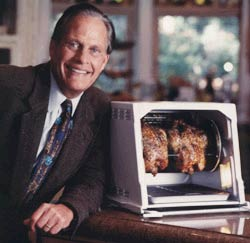

Now for the main event...
What is event driven programming?
- Execution of the program is driven by events
and callbacks triggered from those events
- Synchronous but non-blocking (not truely asynchronous, but can be considered asynchronous with threads)
- Uses the Reactor Pattern
Isn't that like Node.js?
Yeah, but so is..
- Twisted (Python)
- MINA (Java)
- AnyEvent (Perl)
Event driven frameworks are not new, they are just hot right now because of Node.js
The Reactor Pattern
The Reactor Pattern
Components
- Synchronous Event Demuliplexer
- Sends the resource to the dispatcher when it can be processed can complete it in a synchronous manner.
- Listens to Network, File System, Key presses, etc.
- Dispatcher
- Registers and unregisters the request handlers. Routes the resource to the proper handler.
- Request Handler
- This is the code we write
- Accomplished mostly with callbacks
The Reactor Pattern
Features

- A set it and forget it...system of events and callbacks
The Reactor Pattern
Analogy
Traditional

The reactor pattern is like a Mongolian grill resturaunt.
Getting Started With EventMachine
The Event Loop
require 'eventmachine'
EM.run do
# Evented magic happens here...
end
Getting Started With EventMachine
Things you can do in the event loop
EM.add_timer(seconds, &block) - A once shot timer that executes the block in the specified number of secondsEM.add_periodic_timer(seconds, &block) - Like add_timer but repeats indefinitelyEM.start_server(server, port, handler, &block) - Listens for input on a port and passes that input to the specified handler.